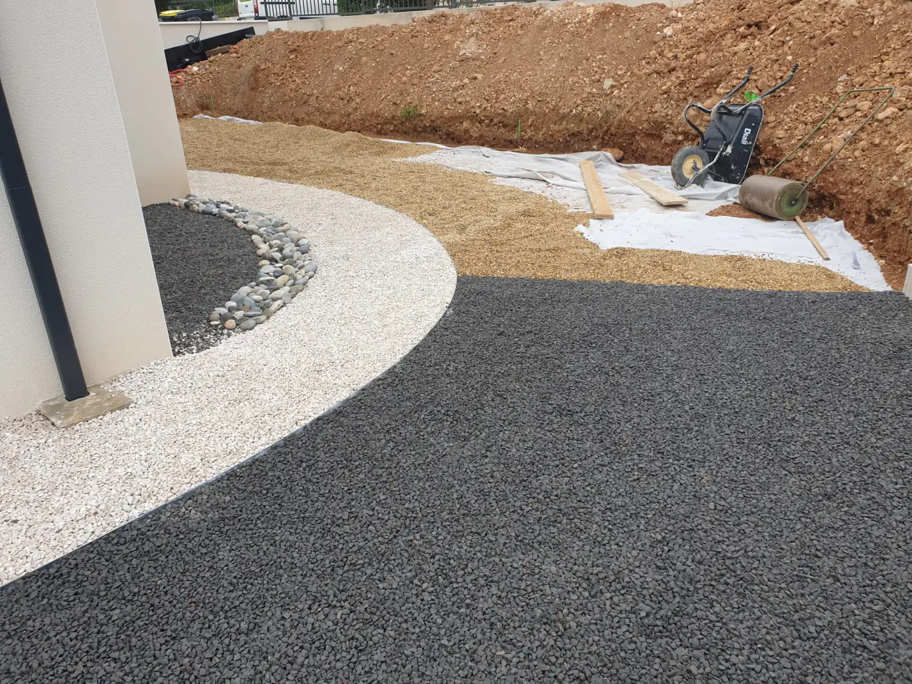

Taille & topiaires
Haies au cordeau, oliviers en nuage, arbres fruitiers, palmiers. Taille en hauteur quand il faut.

AccueilAménagement minéral
Saint-Cyr Services
Allées, cours, paillages minéraux, pas japonais, béton désactivé, bordures acier, galets. Tout ce qui se marche, et qui doit rester plat.
La fondation
Une allée, une cour, un passage le long de la maison, c’est ce qu’on emprunte tous les jours. Ça doit rester plat. Le reste vient après.
Le travail commence en dessous. On décaisse jusqu’à un fond propre. On pose un géotextile pour que la terre et le matériau ne se mélangent pas. On apporte de la grave, on compacte par couches, on règle les niveaux. Un gravier étalé sur de la terre végétale s’enfonce dès le premier hiver.
Le matériau se choisit ensuite. Gravier roulé ou concassé, galets, ardoise, béton désactivé, pavés. Ça dépend de l’usage : voiture, piéton, pieds nus au bord du bassin. Et de l’exposition.

Le détail
Tout ou partie, selon le chantier. Chaque poste est chiffré à part sur le devis.
Réalisations
Finis pour la plupart, deux encore en chantier. Cliquez pour agrandir.
Questions fréquentes
C’est l’usage qui décide. Là où une voiture manœuvre et se gare : béton désactivé, pavés ou gravier concassé anguleux sur une bonne fondation. Le gravier roulé, lui, roule sous les pneus. Pour un passage à pied, un gravier fin ou des pas japonais suffisent. À l’ombre et en terrain humide, on monte en calibre et on soigne le drainage, sinon ça verdit.
Au bord d’un bassin, on évite le gravier coupant et les surfaces qui chauffent au soleil. Une dalle ou un désactivé à granulat clair, avec une pente qui éloigne l’eau.
Oui. Une bordure retient le gravier, tient la ligne du tracé et empêche le gazon de venir manger l’allée. L’acier donne un trait fin et des courbes franches. Le pavé ou la bordure béton donnent une limite plus large, qui sert de guide à la tondeuse.
C’est la première chose qu’on regarde sur place, avant de parler matériau. Les points hauts, les points bas, par où l’eau arrive et par où elle peut sortir. Ensuite on donne une pente, on garde du perméable quand c’est possible, et on ajoute un caniveau si le terrain l’impose. Une allée plate et étanche qui renvoie l’eau contre un mur, c’est un problème qui revient à chaque orage.
Le géotextile bloque ce qui vient d’en dessous. Reste ce qui arrive par le vent et germe dans les poussières de surface. Une bonne épaisseur de gravier et un désherbage de temps en temps suffisent. Sinon, ça se règle pendant un passage d’entretien régulier.
Aller plus loin
Le minéral va rarement seul. Il y a presque toujours un massif à replanter ou une haie à reprendre juste à côté.
Haies au cordeau, oliviers en nuage, arbres fruitiers, palmiers. Taille en hauteur quand il faut.

Semé, en plaques ou synthétique. Avec la préparation de sol et l’arrosage qui vont avec.

Massifs méditerranéens, haies persistantes, potagers. Et le camion-grue quand l’arbre ne passe pas par le portail.

Plages de piscine, terrasses bois ou carrelées, écrans de verdure contre le vis-à-vis.

Tonte, taille, débroussaillage, désherbage, feuilles. Déchets verts emportés.
Le déplacement et le devis ne coûtent rien. Un coup de fil suffit pour savoir si c’est faisable.